SmartGR：面向生成式推荐的层级感知与 Beam 感知知识蒸馏
SmartGR 研究怎样把较大的生成式推荐模型压缩成可服务的小模型，同时尽量保住大模型在层级语义 ID 与 beam search 上的优势。论文由浙江大学 Ziheng Zhang、Yu Cui、Bohao Wang、Wujie Sun、Can Wang、Jiawei Chen 等人与蚂蚁集团 Yong He、Chao Yu、Chuan Yuan 合作完成，2026 年 8 月 3 日公开于 arXiv:2608.02048。本文以 OneRec-8B 为教师、OneRec-1.7B 为学生，在 Amazon Beauty、Amazon Toys、Kuaishou Video 和 Kuaishou Ad 上做离线蒸馏；本轮未从论文入口或元数据核验到独立官方代码仓库。
现有知识蒸馏没有处理生成式推荐的两个特有困难：教师与学生的差距会随 SID 从粗到细的层级而变化，而逐位置对齐教师分布也不能保证教师偏好的条目在学生的 beam search 中不被低分中间前缀提前剪掉。
1. 背景和问题
1.1 扩模收益为何不能直接兑现到 serving
生成式推荐不再为整个候选库逐条计算 item score，而是先把每个物品编码为固定长度的语义 ID（semantic ID，SID），再根据用户历史自回归生成目标 SID。SID 的前部 token 表示较粗的语义簇，后部 token 逐步区分簇内物品；推理时通过约束 beam search，只扩展能落在有效 SID trie 中的前缀。这个范式把物品语义、序列建模与大模型扩展能力接到同一条链路上，但也把服务瓶颈从“大量候选打分”变成了“多步解码乘以 beam 宽度”。模型参数增加后，每一步前向更贵，beam 中每条存活路径都会放大这项成本。
论文先用同一 OneRec 系列展示扩模的两面性。在 Kuaishou Ad 上，8B 相对 1.7B 的 Pass@32 从 21.24 升至 27.19，Recall@32 从 7.39 升至 9.75，但总推理时长由 694.87 秒增至 1132.03 秒；Video 上 Pass@32 从 16.95 升至 20.90，Recall@32 从 2.74 升至 3.68，时长则由 2157.33 秒增至 4037.11 秒。换言之，扩模带来约 23.3%–34.3% 的指标收益，也带来 1.63–1.87 倍的总时长。对于要在严格延迟预算中执行多步解码的推荐服务，单纯部署教师并不是可接受答案，知识蒸馏才有现实意义。
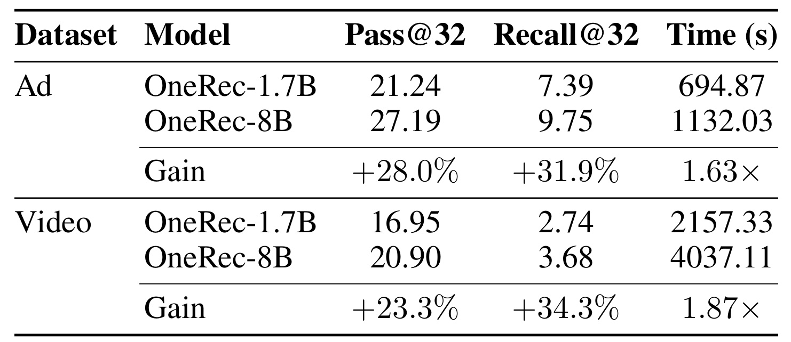
Table 1 的关键不是重复“大模型更准”这一常识，而是把收益和代价放在同一测量口径里。Ad 的 8B 模型比 1.7B 多花约 437 秒，Video 多花约 1880 秒；而且 Video 的绝对 Recall 仍只有 3.68，说明额外计算并没有把任务变成接近饱和的简单问题。表中的 Time 是整套离线推理总时长，不能直接等同于单请求线上 P99，但它足以证明服务成本随参数规模显著抬升。SmartGR 因而选择“训练时借教师、推理时只留学生”的路线，而不是为 8B 再设计一个更快的部署内核。
还有一个容易忽略的口径是，Pass@32 与 Recall@32 同时提高，说明 8B 的优势既体现在“beam 中是否包含至少一个正确目标”，也体现在“多个目标被覆盖的比例”；它不是只让少数幸运样本翻转。但推理时长增幅也跨 Ad、Video 一致存在，因此压缩目标不能只追一个离线指标。一个可上线的学生要同时保持层级生成质量、beam 候选覆盖和有限算力下的吞吐，后文的两种蒸馏才有必要分别处理 token 条件分布与候选前缀排序。
1.2 蒸馏不是每个 SID 位置同样难
传统推荐蒸馏常对完整 item 排序、隐层表示或单个 ID logits 传递知识；通用语言模型蒸馏则常把所有生成位置视为同类 token。生成式推荐的 SID 却有明确的粗到细结构：较浅位置决定大类，较深位置负责在相似物品间消歧。一个浅层 token 错误会让后续落到完全不同的子树，一个深层 token 错误则常发生在语义相近、区分难度更高的候选之间。因此，大教师相对小学生的优势不必在每个位置均匀出现，固定的逐层平均 KL 可能把太多权重给容易的浅层，把太少权重给更需要教师信号的深层。
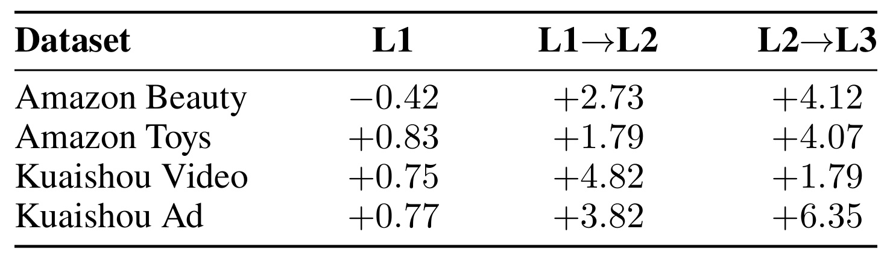
Table 2 报告 OneRec-8B 相对 OneRec-1.7B 的条件前缀保留增益。Beauty 在 L1 反而是 -0.42%，到 L1→L2 与 L2→L3 变为 +2.73% 和 +4.12%；Toys 也从 +0.83% 逐步增至 +4.07%。Kuaishou 的模式并非严格单调：Video 在中间迁移达到 +4.82%，末层为 +1.79%；Ad 则在末层达到 +6.35%。这组结果同时传达两层信息：深层往往更需要蒸馏，但数据集间的难度曲线又不完全相同。SmartGR 因而没有手工写死每一层的常数，而是使用 SID 深度作为单调结构先验，再让训练学习曲线形状。
这里的“增益”描述的是条件前缀保留，不是最终 Recall 的简单分层。某个位置为负并不意味着教师整体更差，而是提醒蒸馏权重不应机械复制参数规模差距。Beauty 的浅层近乎无需教师，Ad 的末层却有明显空间；若四层共享相同系数，优化预算会被容易位置稀释。与此同时，Video 的非单调结果也说明论文所用“深层不小于浅层”的先验并非对所有局部差距逐点拟合，而是一种降低自由度、鼓励粗到细增长的归纳偏置，其合理性最终要由权重函数消融验证。
1.3 最终分高不代表中间前缀能存活
第二个困难来自训练目标与推理解码之间的错位。一个完整 SID 的序列对数概率可以很高，但 beam search 不会等到序列结束才比较所有条目；它在每个层级只保留累计分数最高的 K 个前缀。若目标条目的某个中间 token 暂时得分偏低，它会在后续高分 token 尚未出现前被不可逆地剪掉。普通 token-level KD 即使使学生在每个教师前缀上的分布更接近教师，也未显式约束“正候选前缀应在相邻负候选之上”，因此不能直接优化 beam 的生存顺序。
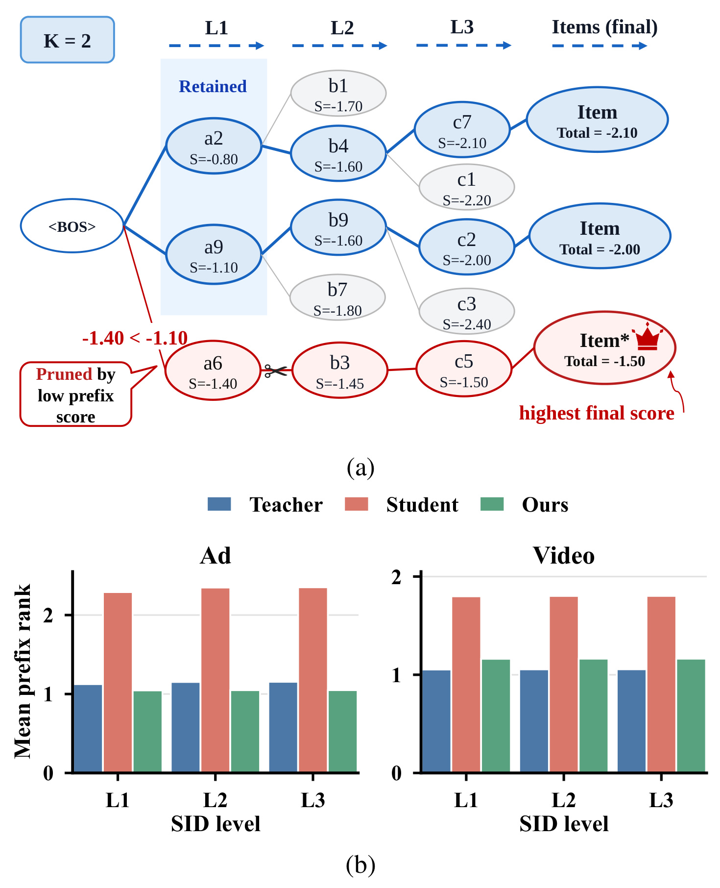
Figure 1(a) 给出 K=2 的原生示例：红色目标路径最终总分 -1.50，高于两条蓝色存活路径的 -2.10 与 -2.00，但它在 L1 的前缀分数 -1.40 低于另一候选 -1.10，已被提前剪掉，最终优势永远没有机会显现。Figure 1(b) 把这种现象转成可测量的 mean prefix rank：教师对自己全局 Top-1 条目的中间前缀排序优于原学生，SmartGR 训练后的学生在 Ad 与 Video 的各层总体更靠前。图的价值在于把“完整条目排序”拆成“每一步能否留在 beam”这一真正决定召回的路径问题。
更重要的是，图中的错误不是通过提高最后一个 token 的概率就能修复：路径在到达最后一层前已经不存在。因而蒸馏若只比较完整候选分数，训练梯度无法精确指向发生剪枝的层级；若只比较单点 logits，也没有表达两条候选累计分数的相对次序。SmartGR 选择逐层比较正负前缀，正是把监督放到 beam 的决策时刻。图 (b) 又提供可追踪的中间指标，使方法不必只凭最终推荐精度倒推机制是否生效。
由此看，SmartGR 的研究问题不是笼统的“怎样让学生模仿教师”，而是两项更具体的对齐：第一，在目标 SID 仍与教师候选兼容的层级上，怎样把更多蒸馏强度分给更困难的深层；第二，怎样把教师对候选前缀的相对排序传给学生，使高价值路径不在生成中途消失。前者是 token/SID 位置层面的条件分布传递，后者是 item path 层面的 beam 生存偏好传递，两者的监督对象不同。
2. 方法
2.1 从 SID 自回归到 beam 前缀生存
给定物品集合 $\mathcal I$，tokenizer $\phi(\cdot)$ 将物品 $i$ 映射为长度 $L$ 的 SID：$\phi(i)=(z_{i,1},\ldots,z_{i,L})$。用户历史中每个物品都被替换为 SID 序列，构成模型输入 $x$；目标物品的 SID 记作 $g=(g_1,\ldots,g_L)$。标准生成式推荐把完整目标概率分解为逐层条件概率：
符号解释：$\theta$ 是生成模型参数，$g_\ell$ 是第 $\ell$ 层 SID token，$g_{1:\ell-1}$ 是此前的目标前缀。公式（1）意味着只有整条 SID 被正确生成，目标物品才真正命中；浅层看似很小的条件概率误差会改变后续所在子树，深层误差则直接破坏最终物品区分。
推理阶段，beam search 对候选前缀 $z_{1:\ell}$ 使用累计对数概率：
符号解释：$S_\theta$ 是到层 $\ell$ 为止的前缀累计分数，$z_j$ 是该候选第 $j$ 个 SID token；每层只保留得分最高的 $K_{beam}$ 个有效前缀。公式（2）说明解码决策使用的是中间累计分数，而非完整序列最终分数，这正是 Figure 1 中错误剪枝的数学来源。
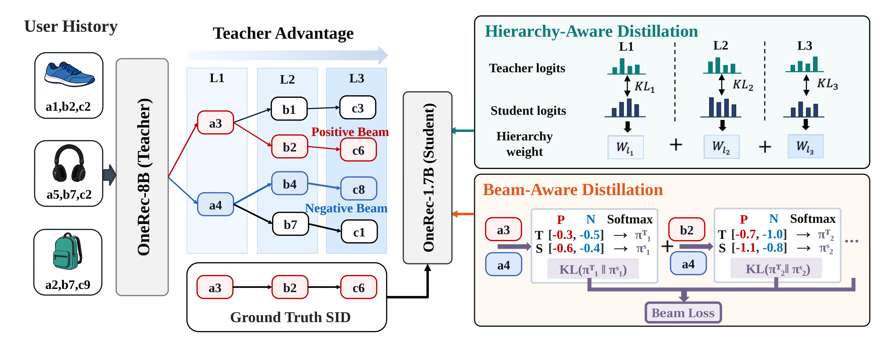
Figure 2 从左到右给出完整训练流。用户历史同时送入冻结的 OneRec-8B 教师和可训练的 OneRec-1.7B 学生；教师预先生成并排序 beams，SmartGR 找到与 ground-truth SID 共享最长前缀的教师 beam 作为正例，并取教师排序中紧邻的下一条 beam 作为负例。右上分支在正 beam 的兼容位置比较教师与学生 token logits，并乘以随层级变化的权重；右下分支把正负 beam 的累计前缀分数变成二元偏好分布，再做 KL 对齐。两条支路共享教师缓存，却分别回答“每层预测什么”和“哪条前缀应先存活”。
图中教师侧的 Positive Beam 不必等于 ground-truth 完整 SID，它只需在缓存候选中与目标共享最长前缀；共同部分决定哪些层可安全使用教师分布。Negative Beam 也不是任取难例，而是教师排序中正例的下一名，这让二元偏好既遵守教师次序又接近实际剪枝边界。训练完成后，右侧所有教师 logits、层级权重计算和 Beam Loss 都不进入 serving。这个结构解释了为什么 SmartGR 能增加训练监督而不改变学生解码器接口。
2.2 Hierarchy-Aware SID Distillation
教师缓存记为 $\mathcal B(x)=\{b_k\}_{k=1}^{K_{beam}}$，并按完整教师分数降序排列。每个 beam $b_k=(z_{k,1},\ldots,z_{k,L})$。SmartGR 选择与目标 SID 共享最长前缀的教师 beam $b_{k^*}$；若多条 beam 的共同前缀长度相同，取教师排名更高者。最长公共前缀长度记为 $L^*$，有效层集合为 $\mathcal L(x)=\{1,\ldots,L^*\}$。若 $L^*=0$，该样本不使用蒸馏辅助项，只保留 ground-truth hard loss。这一过滤把“教师分高”与“教师信号和目标兼容”分开，避免把另一物品子树的 token 分布硬塞给学生。
在第 $\ell$ 个有效位置，学生被 teacher-forcing 到教师所选 beam 的同一前缀：
符号解释：$p_\ell^S$ 是学生在上下文 $x$ 和正 beam 前缀 $z_{k^*,1:\ell-1}$ 下对下一个 SID token 的分布，对应教师缓存分布记为 $q_\ell^T$。公式（3）让师生比较发生在相同条件前缀上，而不是把来自不同路径的 logits 混在一起。
SmartGR 用归一化深度 $d_\ell=\ell/L$ 产生层级分数，再在当前样本的有效共同前缀内做 softmax：
符号解释：$a_\ell$ 是层 $\ell$ 的未归一化重要性，$w_\ell(x)$ 是该样本上的蒸馏权重，所有有效层权重和为 1。公式（4）的样本内归一化很重要：共享前缀更长的样本不会仅因可蒸馏位置更多就自动获得更大的总 loss。
深度到分数的映射采用有界单调 tanh：
符号解释：$\tau_{lev}$ 控制曲线尺度，$\theta_{raw}$ 是与学生共同训练的标量，sigmoid 与 $\theta_{max}$ 把 $\theta$ 限定在稳定范围。公式（5）保证深层分数不低于浅层，同时仍能学习增长快慢；它不是为每个数据集手工指定四个权重，也不会像完全自由的 per-level logits 那样失去粗到细的顺序先验。
最终的层级感知 SID loss 为：
符号解释：$\mathrm{KL}(q_\ell^T\Vert p_\ell^S)$ 衡量教师与学生在同一兼容前缀上的条件分布差异，$w_\ell(x)$ 决定各层贡献。公式（6）把结构先验、目标兼容过滤和 token-level 知识传递合在一起；若教师缓存几乎找不到目标兼容前缀，loss 会被跳过而不是勉强扩大监督覆盖。
2.3 Beam-Aware Ranking Distillation
SID loss 仍只对齐单条正 beam 上的条件分布，没有直接教会学生“正前缀要压过竞争前缀”。SmartGR 因而从教师排序中选择正 beam 的紧邻下位候选：
符号解释：$k^*$ 是正 beam 在教师缓存中的名次，$k^-$ 是负 beam 名次。公式（7）选择下一名而非随机、第一名或最后一名：它在教师排序方向上一定低于正例，又比尾部 beam 更接近决策边界。若 $k^*=K_{beam}$，不存在下一名，BEAM loss 对该样本关闭；论文称这种边界情况在各数据集都少于 1.2%。
训练时学生不重新执行昂贵的 beam search，而是对缓存中的正负序列做 forced scoring：
符号解释：$S_{S,k}^{\ell}$ 是学生对 beam $k$ 到第 $\ell$ 层的累计分数；教师对应分数 $S_{T,k}^{\ell}$ 已在缓存中。公式（8）只需对两条已知序列前向计分，避免把训练开销扩成完整 listwise beam 竞争。
随后把正负两个累计分数除以层数和温度，构成教师、学生的二元偏好分布：
符号解释：$\pi_T^\ell$ 与 $\pi_S^\ell$ 是第 $\ell$ 层正负前缀的相对偏好，$\tau$ 为蒸馏温度。公式（9）除以 $\ell$，把累计对数概率改写成近似每层平均分，防止序列越长、数值绝对差天然越大而让不同层不可比较。
BEAM loss 在同一有效层集合上匹配偏好：
符号解释：$|\mathcal L(x)|=L^*$ 是可用共同前缀层数，$\tau^2$ 是常见蒸馏尺度补偿。公式（10）优化的不是完整条目最终名次，而是每个可能发生剪枝的层级上，学生是否复现教师对相邻候选的局部顺序。它依赖教师 beam 与目标有足够共同前缀；扩大到不兼容位置会引入错误监督，实验中的退化比单纯去掉 loss 更严重。
2.4 联合目标与训练—推理解耦
SmartGR 将两项辅助损失与标准目标 SID 自回归监督相加：
符号解释：$\mathcal L_{hard}$ 是 ground-truth SID 的标准自回归交叉熵，$\lambda_{SID}$ 与 $\lambda_{BEAM}$ 分别控制层级分布和 beam 排序知识。论文默认设为 0.6 与 0.3，$\tau=\tau_{lev}=1$，教师缓存 beam 宽度默认为 16。
训练与推理的分工非常明确：训练前由 8B 教师生成 beams，并缓存排名、累计分数和 Top-16 token 支持；训练时 1.7B 学生读取缓存，计算 hard loss、SID loss 与 BEAM loss；推理时教师、缓存、层级权重和两项蒸馏 loss 全部移除，只运行原本的 OneRec-1.7B 约束 beam search。因而 SmartGR 的 serving 加速主要来自模型尺寸回落，并不声称通过蒸馏 loss 改变了解码复杂度。离线缓存也有代价：需要额外存储教师候选与稀疏 logits，且缓存质量决定可用共同前缀覆盖率。
3. 实验结果
3.1 数据、设置与对照组
实验包含两组 Amazon 顺序推荐数据和两组 Kuaishou 工业数据。Beauty 有 18,041 用户、10,166 物品、147,383 次交互，Toys 有 15,001 用户、9,755 物品、125,166 次交互；Kuaishou Video 有 156,245 用户、11,589,098 物品和 75,671,142 次交互，Ad 有 121,056 用户、162,828 物品和 4,273,723 次交互。Amazon 使用长度 4 的 SID 和 beam width 16，以 Recall@5/10、NDCG@5/10 评估；Kuaishou 使用长度 3 的 SID 和 beam width 32，因为每个样本有多个目标，以 Recall@16/32、Pass@16/32 评估。
OneRec-8B 教师离线蒸馏到 OneRec-1.7B 学生。Beauty 与 Toys 联合训练、分开评估，Ad 与 Video 同理；学生训练 4 个 epoch，AdamW 学习率 $5\times10^{-6}$，全局 batch size 128。对照覆盖三类方法：传统推荐 KD 包含 CD、PCKD、RCE-KD、DLLM2Rec、SLMRec、C2KD；语言模型 KD 包含 KD、MiniLLM、SeqKD、TVDKD；生成式推荐 KD 包含 LOHRec 与 SID-MLP。这样既能看通用蒸馏是否可直接迁移，也能看 GR 专用方法是否真正覆盖层级和 beam 问题。
3.2 主结果：平均提升背后的 16 个指标
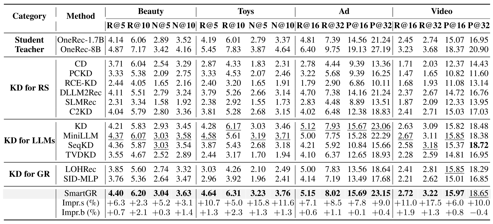
Table 4 显示 SmartGR 相对原 OneRec-1.7B 在 16 个指标上全部提升，幅度为 2.3%–17.5%，平均 8.6%；在所有学生方法中取得 15/16 个最佳值。提升在 Toys NDCG@5（+15.8%）、Video Recall@32（+17.5%）等位置较大，在 Beauty Recall@10（+2.3%）等位置较小，说明平均数并非由单一数据集支撑。相对每列最强 KD baseline，15 列仍为正增益，唯一负值是 Video Pass@32 的 -0.4%；因此更稳妥的结论是“总体更一致”，而不是“每个指标都压过所有蒸馏方法”。
从绝对值看，SmartGR 仍未追平 8B 教师，例如 Ad Pass@32 为 23.15，而教师为 27.19；这正是压缩质量与 serving 成本间剩余的 Pareto 差距。表中加粗比较只覆盖同一实验协议下的学生方法，不能据此断言 SmartGR 超过所有可能的更大模型或不同 tokenizer。它证明的是：在固定 OneRec-1.7B 架构与统一蒸馏设置下，加入 GR 特定结构比通用知识传递更稳健。
三类基线的比较也揭示任务错配。六个传统推荐 KD 在平均意义上比 SmartGR 低 12.1%，而且论文指出它们在此设置下都可能不如原学生，原因之一是完整 item 监督难以给共享 SID 前缀提供精确 token 信号。SmartGR 比每列最佳语言模型 KD 平均高约 1.0%，优势不算巨大，但跨 16 指标更稳定；相对 LOHRec 与 SID-MLP，平均高 20.4% 与 27.3%。不过这些比例来自论文统一复现实验，不等价于各方法原论文的最佳公开成绩。
3.3 组件消融：损失本身与可靠教师信号
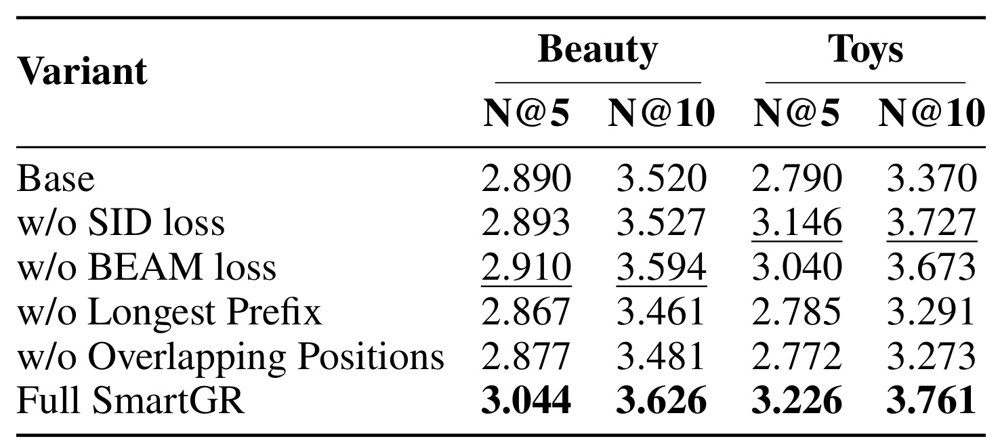
Table 5 把“两个 loss 是否有用”和“监督是否可靠”分开。去掉 SID loss 或 BEAM loss，四个 Amazon NDCG 指标平均相对下降约 2.8% 和 3.3%，但两者的相对重要性随数据集变化：Toys 对 beam 排序更敏感，Beauty 对层级分布更敏感。更显著的是，若不选最长目标兼容前缀，或把蒸馏扩到共同前缀之外，平均相对下降都约 9.1%，部分结果甚至低于原 Base。由此可见，SmartGR 的收益不只是增加两个 KL 项，关键是先过滤“教师知道但与 ground truth 不一致”的信号。
表中 w/o SID loss 与 w/o BEAM loss 仍高于各自 Base，说明两项监督能独立提供一部分收益；Full SmartGR 又在四列全部最佳，支持互补而非互相替代。相反，两种兼容性破坏同时拖累 Beauty 与 Toys，表明问题不是某个数据集偶然偏好。消融没有报告多随机种子的方差，细小差值需谨慎，但约 9.1% 的平均退化足够把“信号筛选”提升为方法核心，而非实现细节。
这项结果也约束了方法的使用方式。若线上目录变化快、SID tokenizer 经常更新，历史教师缓存中的前缀兼容关系可能失效；继续使用旧缓存会类似“w/o Longest Prefix”或“w/o Overlapping Positions”，把高置信却错误的教师分布注入学生。复现时应把 tokenizer 版本、catalog 快照、教师 checkpoint 与 beam cache 绑定，而不能把 cache 当成可跨版本复用的普通蒸馏数据。
3.4 训练与推理成本
论文在 Amazon 上把教师缓存 beam 从 2 增到 16，平均 Recall 明显提高，训练总时长由 2.06 小时增到 3.16 小时；作者概括为约 8.5% 的平均性能收益与 1.53 倍蒸馏时间。这个权衡说明教师候选覆盖越宽，找到目标兼容正 beam 和困难邻近负 beam 的机会越高，但缓存构建、存储和 forced scoring 也会增加。它是一项训练侧成本，不会直接进入服务路径。
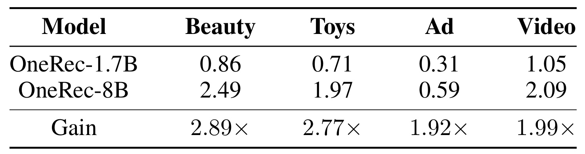
Table 7 量化部署端收益：Beauty、Toys、Ad、Video 上，1.7B 的总推理时长分别为 0.86、0.71、0.31、1.05 小时，8B 为 2.49、1.97、0.59、2.09 小时，对应 2.89、2.77、1.92、1.99 倍加速，四者平均约 2.39 倍。速度并未简单等于参数比 8/1.7，说明 GPU 利用率、beam 宽度、序列长度和数据规模共同影响实际吞吐。论文没有在表中给出硬件、batching、P50/P99 延迟等完整 serving 细节，因此这些数字适合证明相对效率，不足以直接估算另一套线上集群的容量。
Amazon 的加速高于 Kuaishou，也提示“学生更小”并不是唯一变量。Kuaishou 使用 beam width 32，候选展开、trie 约束和短序列 kernel 开销可能占更大比例，使参数缩小的收益被非模型计算稀释。表里的时间单位为小时且是整套数据推理，不包含教师 cache 构建，因为后者只发生在训练侧。若用于生产容量规划，还需在一致的请求长度分布、beam 设置和动态 batching 下重复测量，并把显存峰值与吞吐一起报告。
3.5 机制验证：前缀保留与 beam 名次
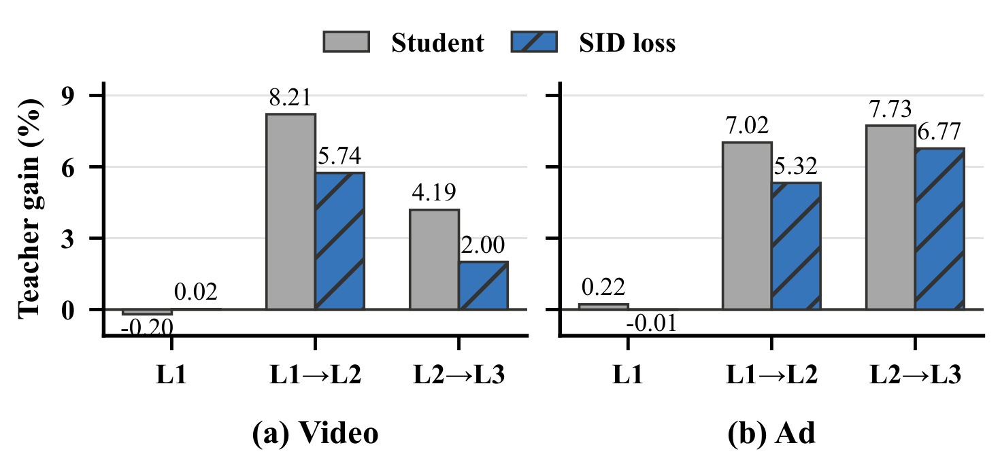
Figure 3 比较教师相对原学生、相对加入 SID loss 学生的 target-item prefix retention 增益。六个 Video/Ad 层级迁移中，SID loss 在五个位置把差距缩小，平均绝对差距下降 28.0%；例如 Video 的 L1→L2 差距从 8.21 降到 5.74，L2→L3 从 4.19 降到 2.00，Ad 的 L1→L2 从 7.02 降到 5.32。也存在接近零或略为负的浅层值，提醒我们教师并非每一层都占优；单调深层加权比盲目放大所有教师 token 更合理。
这张图没有直接展示 BEAM loss，而是单独隔离 SID loss 的作用，因此比只看 Full SmartGR 更接近因果机制检验。Ad 的 L1 从教师相对学生 +0.22 变为相对 SID-loss 学生 -0.01，意味着学生在该浅层已略过教师；深层仍保留明显差距，支持把更多权重放到后续层。若未来复现只看到最终 NDCG 提升却看不到这些层级差距缩小，应优先检查共同前缀选择、teacher logits 缓存和权重归一化是否实现正确。
另一项机制指标来自 Figure 1(b)：加入 BEAM loss 后，学生对全局 Top-1 条目的 mean prefix rank 相对原学生平均降低 46.5%，并在 Ad 上超过教师。这不能证明最终推荐效果完全由 prefix rank 改善导致，但它至少建立了“训练目标—中间机制—最终指标”的证据链：SID loss 对准层级保留差距，BEAM loss 对准逐层生存顺序，主结果再验证两者组合对 Recall/NDCG/Pass 的影响。
3.6 超参数、负样本和监督范围
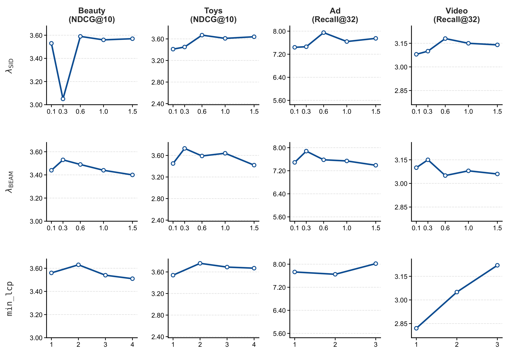
Figure 4 展示 $\lambda_{SID}$、$\lambda_{BEAM}$ 和 $min\_lcp$ 的敏感性。默认 0.6 与 0.3 在四数据集上总体最佳，邻近系数多数没有断崖式退化，说明方法并非只在一个尖锐调参点工作。共同前缀阈值则更依赖数据：阈值太松会纳入与目标一致性不足的教师 beam，太严又会丢失监督覆盖；Video 的曲线与 Amazon 明显不同。实际迁移时，不能只复制默认阈值，应先统计本地 cache 的 $L^*$ 分布，再在可靠性和覆盖率之间重新选点。
十二个子图还表明三类超参数的风险不同：损失系数主要改变两种知识的相对强度，曲线通常在邻域内平滑；$min\_lcp$ 则改变哪些样本获得蒸馏，属于数据选择门槛，跨域变化更大。Amazon 的候选阈值有四层可选，Kuaishou 只有三层，横轴也不能直接一一对齐。稳定性结论应限于论文扫描范围，不能推导到更宽 beam、更长 SID 或完全不同的教师规模。
附录还比较负 beam 选择。next-lower-ranked 在 Beauty/Toys 上取得 NDCG@10 3.527/3.727；随机为 3.452/3.692，第一名为 3.454/3.693，最后一名只有 3.093/3.414。第一名可能位于正例之上，违反教师排序方向；最后一名太容易，提供不了接近剪枝边界的对比；随机选择则不能稳定控制这两项性质。紧邻下位候选是一个小而重要的 inductive bias。
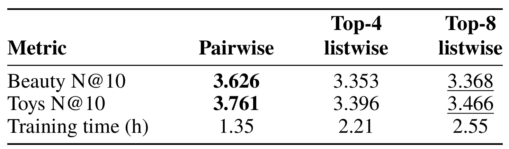
Table 10 进一步显示，扩大监督范围不一定更好。pairwise 在 Beauty/Toys NDCG@10 上为 3.626/3.761，Top-4 listwise 为 3.353/3.396，Top-8 为 3.368/3.466；训练时长则是 1.35、2.21、2.55 小时。pairwise 相比两种 listwise 省约 39%–47% 时间，同时指标更高。解释是 beam 剪枝由排名相邻候选的局部竞争决定，加入更远、更容易的 beams 会稀释最相关的边界信号，并要求 forced-score 更多序列。
这里不能把结果简化成“pairwise 永远优于 listwise”。论文的 listwise 变体共享同一 teacher cache，并把监督扩到 Top-4 或 Top-8，但没有证明所有 listwise 损失、采样和温度设计都已最优。更准确的读法是：在当前 SID beam 场景中，正例下一名承载了最贴近剪枝边界的 teacher preference，增加远端候选既没有补足信息，反而引入容易比较的项。训练时长从 1.35 小时升到 2.55 小时，也量化了监督宽度的边际成本。
3.7 跨域覆盖率暴露的边界
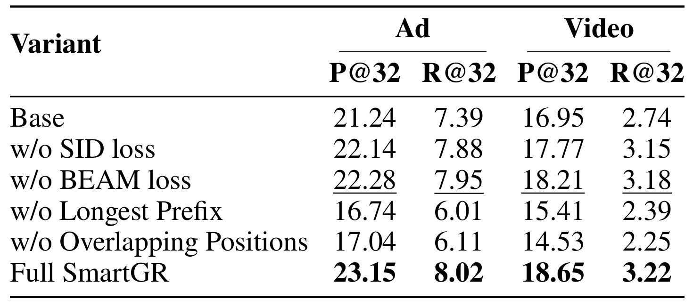
Table 11 在 Kuaishou 重复组件消融。完整 SmartGR 在 Ad 的 Pass@32/Recall@32 为 23.15/8.02，Video 为 18.65/3.22。去掉 SID 或 BEAM loss 后仍高于 Base，但去掉最长前缀选择时降至 16.74/6.01 与 15.41/2.39；把蒸馏扩到不重合位置时为 17.04/6.11 与 14.53/2.25，甚至明显低于 Base。与 Amazon 的方向一致，表明跨域稳定的不是某个损失权重，而是“只传递目标兼容教师信号”这一原则。
数值还显示，两项辅助 loss 在 Kuaishou 上的边际贡献比“是否选择可靠前缀”小得多：去掉单个 loss 仍能保住大部分提升，破坏兼容性却让四项指标全面受损。Video 的 w/o Overlapping Positions Recall@32 只有 2.25，低于 Base 的 2.74，说明噪声教师信号足以抵消 ground-truth 学习。由于 Ad/Video 联合训练，这种干扰还可能跨任务共享参数传播，部署前应分别监控两个域的共同前缀覆盖与退化。
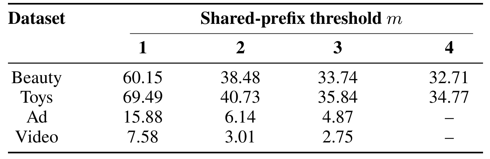
Table 12 同时揭示代价。Beauty/Toys 至少共享两层前缀的比例为 38.48%/40.73%，至少三层为 33.74%/35.84%；Ad/Video 至少三层只有 4.87%/2.75%。按论文选定阈值，约 40% Amazon 样本、少于 5% Kuaishou 样本能获得前缀蒸馏信号。Kuaishou 仍有效不代表覆盖率不重要，而是说明低覆盖的高可靠监督可能胜过高覆盖的噪声监督；同时也暴露 SmartGR 对教师 beam 命中目标邻域的依赖，catalog 更大、行为更稀疏时尤其明显。
累计比例随阈值上升下降很快：Ad 从至少一层的 15.88% 降到至少三层的 4.87%，Video 从 7.58% 降到 2.75%；Amazon 的下降相对缓和。这个差异可能来自物品规模、SID 长度、用户行为和教师 beam 覆盖共同作用，论文没有做完整归因。工程上可以把该表对应的统计作为训练前门禁：若新域的可用比例接近零，应先提高 teacher beam 覆盖或改善 tokenizer，而不是直接增加蒸馏权重。
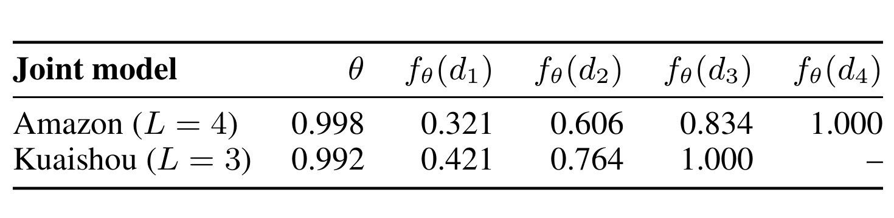
Table 13 核验层级权重是否真的学出深度差异。Amazon 四层的 $f_\theta(d_\ell)$ 为 0.321、0.606、0.834、1.000，Kuaishou 三层为 0.421、0.764、1.000，两个联合模型学到的 $\theta$ 约 0.998/0.992。分数没有塌缩为均匀值，并随归一化深度递增；同一 tanh 参数化也能适配四层与三层 SID。附录权重函数对照中，tanh 在 Beauty/Toys 的四个 NDCG 指标整体最好，uniform 与完全自由的 per-level weights 更不稳定，这说明“可学习曲线 + 单调结构先验”比纯自由度更有用。
表中报告的是 softmax 归一化前的 $f_\theta(d_\ell)$，不是每个样本最终 $w_\ell(x)$。实际权重还取决于该样本的 $L^*$：只共享两层时，只在前两项之间归一化；共享四层时才使用完整序列。因此，末层固定为 1 并不表示它占据全部 loss，而是建立不同深度的相对尺度。Amazon 与 Kuaishou 的 $\theta$ 接近却产生不同中间分数，正是归一化深度 $d_\ell=\ell/L$ 适配不同 SID 长度的结果。
4. 总结
4.1 我的判断与工程启发
SmartGR 最有价值的地方，是把生成式推荐蒸馏从“复制教师 logits”改写成两个与真实解码机制一致的问题。Hierarchy-Aware SID Distillation 对准粗到细 SID 的非均匀难度，Beam-Aware Ranking Distillation 对准逐步剪枝的局部竞争；目标兼容前缀过滤又阻止高置信错误知识进入学生。两项设计都只改变训练，推理保留 1.7B 学生，因此论文报告平均 8.6% 的指标提升和 2.39 倍相对 8B 的推理加速具有清楚的来源。
对推荐系统工程而言，可迁移的原则有三点。第一，蒸馏目标应匹配 serving 时真正发生的决策：若线上是 beam、级联或截断检索，就应监督中间生存顺序，而非只监督最终完整候选。第二，教师信号要先经过与 ground truth、catalog 版本和 tokenizer 的一致性过滤；覆盖率不是越大越好。第三，机制指标值得独立监控，例如 SID 层级保留率、正例 prefix rank、可用共同前缀比例，它们能比最终 Recall 更早发现蒸馏信号失效。
4.2 局限与风险
- 可复现信息不完整。 本轮未核验到官方代码；教师缓存构建、硬件、精确预处理和 serving batching 的细节会显著影响成本数字。
- 收益依赖教师—学生规模和 OneRec 架构。 8B→1.7B 的结论不能直接外推到更小尺寸差距、非自回归解码器或其他 SID tokenizer。
- 共同前缀覆盖在工业数据上很低。 Kuaishou 满足三层阈值的样本少于 5%，方法可能在更大 catalog、冷启动物品或快速变化目录中得到更稀疏的蒸馏信号。
- 离线指标不能替代线上价值。 论文报告 Recall/NDCG/Pass 和总推理时长，没有用户体验、长期多样性、探索性、在线延迟分位数或资源成本实验。
- 单调深层加权是一项结构假设。 Table 2 中 Video 并非严格随深度单调，若某些 tokenizer 的浅层才是主要瓶颈，当前 tanh 先验可能限制最优权重形状。
- 教师偏好可能携带偏差。 SmartGR 更有效地复制教师的层级与 beam 排序能力，也可能同步放大热门物品偏好、曝光偏差或不公平性，而论文没有专门评估这些风险。
4.3 后续跟进
- 复现最小机制实验。 先在 Beauty/Toys 上重建 $L^*$ 分布、Table 5 消融和 prefix-rank 指标，再追主结果；这样能判断收益来自正确机制还是训练配方差异。
- 做 cache 版本与刷新实验。 人为改变 catalog 或 SID tokenizer，测教师缓存过期后 longest-prefix 覆盖和性能退化，确定工业环境的缓存刷新周期。
- 补线上成本口径。 在同一硬件、batch 和并发下比较 8B、原 1.7B 与 SmartGR 的 P50/P95/P99、吞吐、显存和能耗，验证离线总时长能否转成服务容量。
- 检验非单调层级映射。 在保留顺序正则的前提下允许局部非单调，观察 Video 等数据集是否受益，同时防止完全自由 per-level 权重过拟合。
- 加入推荐质量边界。 除 Recall/NDCG/Pass 外，评估新颖性、多样性、长尾覆盖、冷启动和群体公平，确认教师偏好传递没有以牺牲用户侧质量换取离线准确率。
总体而言，SmartGR 不是通用知识蒸馏的简单改名：它把 SID 层级和 beam 中间生存这两个 GR 特有结构写进监督，并用主结果、组件消融、机制指标和效率实验给出较完整证据。但在代码未核验、线上指标缺失、Kuaishou 共同前缀覆盖很低的条件下，更适合把它视为值得复现的训练设计，而不是已经无条件适用于所有生成式推荐系统的生产方案。